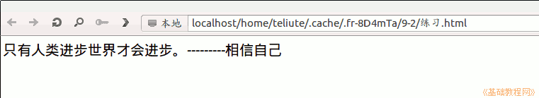

2011-2012 第二学期九年级系统安装教学设计
作者：TeliuTe 来源：基础教程网
十、学会网页编辑器 返回目录 下一课
（一）教学设计
1、学习目标：学会网页编辑器
2、注意事项：下载和解压要注意
3、教学过程：
1）教师准备学案和板书；
2）学生整队进入，开机抄黑板上笔记；
3）教师讲解板书演示操作；
4）学生打指法、日志、完成操作；
5）教师打勾记录学生指法成绩，检查日志和操作；
注：学生抄完笔记就开始打指法、日志，老师讲完后再继续完成；
（二）板书设计(学生笔记)
第10课 学会网页编辑器
1、打开火狐、软件下载、Kompozer、保存
2、主文件夹、下载、kompozer、右键、解压缩到此处
3、kompozer文件夹、右键、剪切、主文件夹、粘贴
4、打开、打开kompozer、运行，编辑、首选项
5、字体、简体中文、新页面、中文/中国，从左到右
6、定一句名言，保存为练习，9-1
操作图示：

（三）课后记 2012-04-27 17:21
提前要求内容并不难，操作步骤复杂，一步一步不要乱
解压缩的地方有出错，稍稍指点即可
--
有一部分去参加师运动会，回来再看怎么补一下
要么集中补要么让旁边的同学指导，视情况而定
--
新页面的设置似乎没用，但是会有个印象
下回做的时候，得用格式设置讲一下
--
Ubuntu12.04 出来了，其实可以练习安装一下
只是不知道实际意义，下回可以尝试
--
九年级还有55天中考，大概还可能上个四五节课
做一个个人网页的站点出来，下节课做个人简介
--
在下载的时候，要点保存要不默认直接打开也麻烦
有的同学要过去问一下，卡住了不吭声
--
还有一个班，不知怎样
明天好像要上课 ，不知道上星期几的
--
返回目录 下一课
本教程由86团学校TeliuTe制作|著作权所有
基础教程网：http://teliute.org/
美丽的校园……
转载和引用本站内容，请保留作者和本站链接。